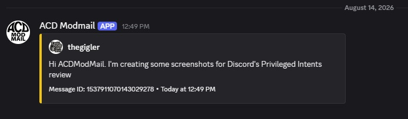

Discord Privileged Intent Review
Message Content Intent
ACD Modmail provides a private communication bridge between Discord users and the server moderation team. Users contact the bot by direct message. Modmail reads the message content, relays that content into a private staff-side Modmail conversation, and records the conversation so moderators can respond and review its history.
The same message is received by the bot and relayed to moderators
These screenshots show both sides of the same Modmail message. On the left, the user sends the text directly to ACD Modmail. On the right, ACD Modmail has relayed that same message content into the private staff-side Modmail conversation.

What the screenshots demonstrate
The exact text sent by the user appears in the staff-side Modmail conversation. ACD Modmail therefore needs access to message content in order to receive the user's DM, relay it to moderators, and preserve the conversation as a Modmail log.
This is not passive monitoring of unrelated server conversation. Message content is processed because users intentionally communicate with the moderation team through the Modmail system.